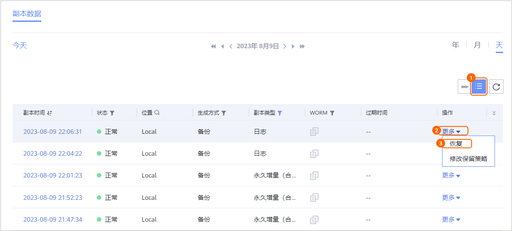
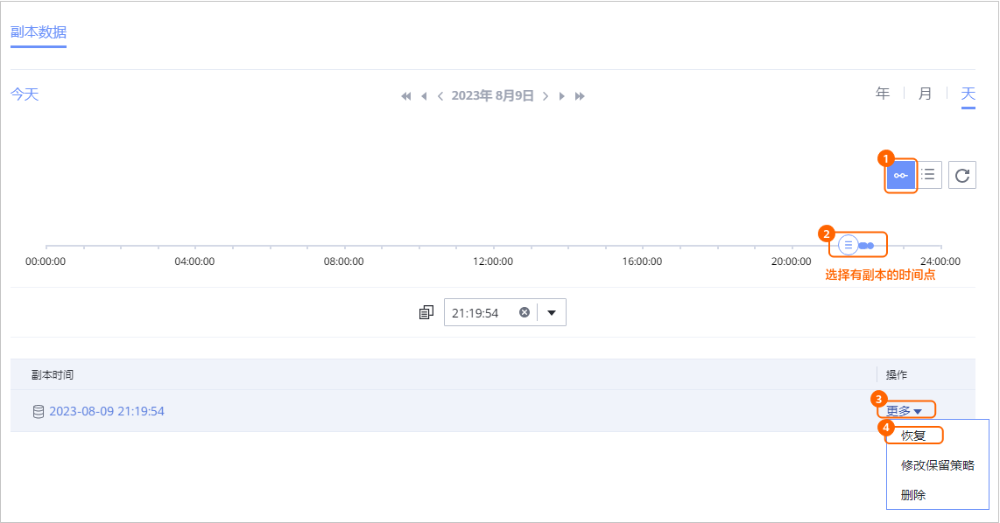

当需要对已备份的数据库进行恢复时，可以参考本节使用副本恢复数据库。
前提条件
- 集群已开启NTP服务且时钟源配置相同。
- 集群实例恢复时，需要保证恢复目标集群的数据同步用户在副本里存在，否则恢复会失败。
操作步骤
- 选择“数据利用 > 副本数据 > 数据库 > TDSQL”。
- 您可以以TDSQL资源维度或以副本维度查找副本，本节以资源维度为例进行说明。
在“资源”页签，根据资源名称查找到需要恢复的资源，并单击资源名称。
- 依次选择年、月、天找到副本。
当时间上显示
 ，即表示该月、该天存在副本。
，即表示该月、该天存在副本。 - 指定副本或时间点进行恢复。
您可以指定某个副本或两个副本之间的任意时间点进行恢复。
- 在“时间选择”页签依次选择年、月、天查找副本。
当时间上显示
 ，即表示该月、该天存在副本。
，即表示该月、该天存在副本。 - 指定某个副本或指定时间点进行恢复。
- 指定某个副本进行恢复

- 指定时间点进行恢复。
时间轴上蓝色覆盖区域均可进行时间点恢复，
 表示该时间点存在副本。没有备份归档日志的时间点无法进行时间点恢复。
表示该时间点存在副本。没有备份归档日志的时间点无法进行时间点恢复。

- 对于1.5.0版本，时间轴上最多仅展示100个副本，单击
 可以查看所有副本。
可以查看所有副本。 - 执行时间点恢复时，由于管理界面无法获取恢复时所使用的副本信息，因此，在恢复任务和相关的事件页面，用户无法看到该恢复任务的副本信息。
- 对于1.5.0版本，时间轴上最多仅展示100个副本，单击
- 指定某个副本进行恢复
- 恢复TDSQL数据库。
- 恢复非分布式实例：
- 恢复TDSQL数据库至原位置。
- 选择恢复至“原位置”。
- 单击“确定”。
- 恢复TDSQL数据库至新位置。
- 选择恢复至“新位置”。
- 选择恢复到的“目标集群”和“目标实例”。
对于1.6.0及后续版本，目标实例的数据库版本号需要和原实例保持一致。
- 单击“确定”。
- 恢复TDSQL数据库至原位置。
- 恢复分布式实例：
- 恢复TDSQL数据库至原集群。
- 选择恢复至“原集群”。
- 选择恢复的“容灾模式”。
仅支持选择不超过目标集群数据节点数量的容灾模式。
- 在“数据节点”区域，为TDSQL业务节点选择所属的代理主机。
- 配置高级参数，参数说明请参见表1。
如不配置高级参数，则默认使用原实例的配置进行恢复。
- 单击“确定”。
- 恢复TDSQL数据库至新集群。
- 选择恢复至“新集群”。
- 选择恢复到的“目标集群”。
选择的目标集群必须打开zkmeta自动备份功能，否则会导致恢复失败。
- 选择恢复的“容灾模式”。
仅支持选择不超过目标集群数据节点数量的容灾模式。
- 在“数据节点”区域，为TDSQL业务节点选择所属的代理主机。
- 配置高级参数，参数说明请参见表2。
如不配置高级参数，则默认使用原实例的配置进行恢复。
- 单击“确定”。
- 恢复TDSQL数据库至原集群。
- 恢复非分布式实例：
- 在“时间选择”页签依次选择年、月、天查找副本。
- 单击“确定”。
后置操作
非分布式实例恢复后，目标实例的用户名和密码将被副本对应实例的用户名和密码覆盖。如果目标实例状态为“离线”，请更新目标实例的用户名和密码。
- 选择“保护 > 数据库 > TDSQL”。
- 选择“非分布式实例”页签。
- 单击目标实例名称。
- 在弹出的界面右上角单击“操作 > 修改”。
- 在弹出的“修改”页面中更新用户名和密码。
- 单击“确定”。